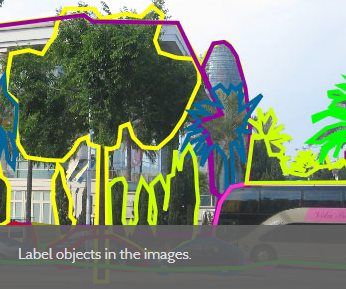
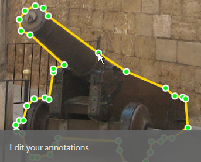

<div class="container-fluid text-center">
  <div class="row">

    <div class="col-lg text-justify content">
      <div class="row">
        <h1>Welcome {{user}}</h1>
        <div *ngIf="logged">
          <button class="logout" (click)="logout()">Logout</button>
        </div>
      </div>
      <h1>SkyMed Labeling</h1>
      <p>SkyMed Labeling is a WEB-based image annotation tool that allows researchers to label images and share the
        annotations
        with the world.</p>

      <h1>This Application allows:</h1>

      <dl>
        <dt>Creation of user accounts:</dt>
        <dd>- New accounts can be instantly created for annotation. Permissions will have to be managed by an
          administrator, though.
        </dd>
        <dt>Organization of images into collections:</dt>
        <dd>- You can organize the images into collections. You can also create
          collections inside collections just as you would do with folders. When you download your database, the
          collections will be organized into folders.
        </dd>
        <dt>Uploading and image annotation:</dt>
        <dd>- You can upload images into your collections and annotate your images using the
          online annotation tool.
        </dd>
      </dl>


      <div class="text-center button-div">
        <button class="start-now" routerLink="../categories">Get Started</button>
      </div>

      <p>This tool utilizes dots to create polygons, as follows</p>
      <div class = "text-center ">
      
      
      </div>
      <hr>
      <hr>
      <hr>
    </div>

  </div>
</div>
